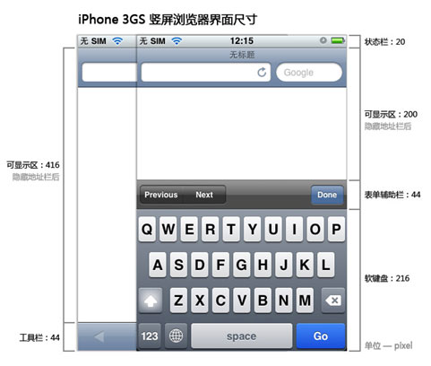
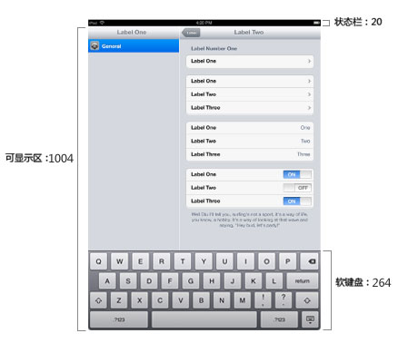

手机端的应用程序相对于客户端最大的优势是跨平台，那么界面设计是否也能做到多平台兼容的，经过一些项目的实践，答案是肯定的，我的原则是“向下兼容”，将设备屏幕中的元素组件按照规范的最大化来进行界面设计。
注：平板电脑除外。
iPhone4：3.5 英寸 960 x 640 像素
iPhone 3GS：3.5英寸 320×480像素
ipad：9.7 英寸 1024 x 768 像素
android：640×480\960*640\480*320...


浏览器的分辨率与移动设备本身的分辨率并不一定一致。很多高分辨率的手机如3.5寸的iphone4分辨率达到960*640。但如果以这样实际的值提供给浏览器进行计算和渲染，那会有两个问题：
1.与其他移动设备差别太大，导致之前专门设计的页面无法兼容
2.按照这样的分辨率去设计页面时，会乱了套，例如12px的字体在普通移动设备上显示正常，但在高分辨率设备上显得太小无法分辨，必须手动把它调高N倍。
于是这些高分辨率设备没有提供真实的像素值给浏览器，而是通过比例缩放的。例如iphone4缩小2倍(480*320)，Nexus缩小1.5倍(533*320)，反过来说就是每个页面都默认放大X倍显示。所以以前一个针对iphone3GS以下设计的网页，在iphone4上表现完全一致，只是更精致了。
在手机端web app中，除了界面背景、图标、logo、特殊元素等，css3可以模拟绝大部分的元素组件，选择最接近通用手机屏幕的480*320为屏幕大小做视觉设计图，完成后的效果图更接近真实手机的屏幕大小，然后用css3进行页面制作，但对于css3不能模拟的如图标等，则先采用向下兼容的原则来设计，后用css3进行修正，这样做的目的是让图片的像素精度更高，不会产生模糊的情况
以上方法只适应于web app，对于客户端的界面设计要严格遵守设计规范，针对不同的设备分辨率设计不同大小的界面。
图标：114px*114px，根据不同的设备属性，用css3修正图标大小适应到不同机型。如：iphone3：57px*57px，iphone4：114px*114px，ipad：72px*72px，android：90px*90px
背景：1024px*1024px，原理同图标相同，用css3控制背景居中，100%大小等。